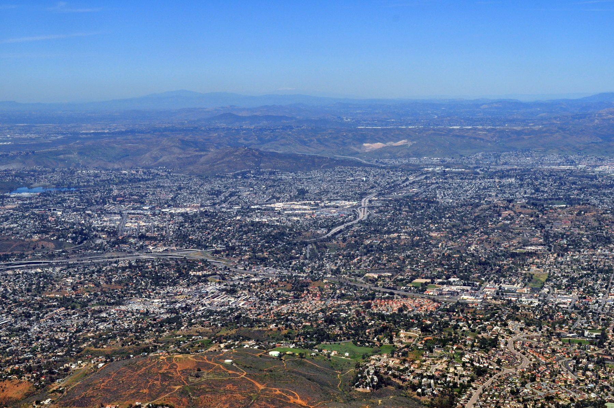
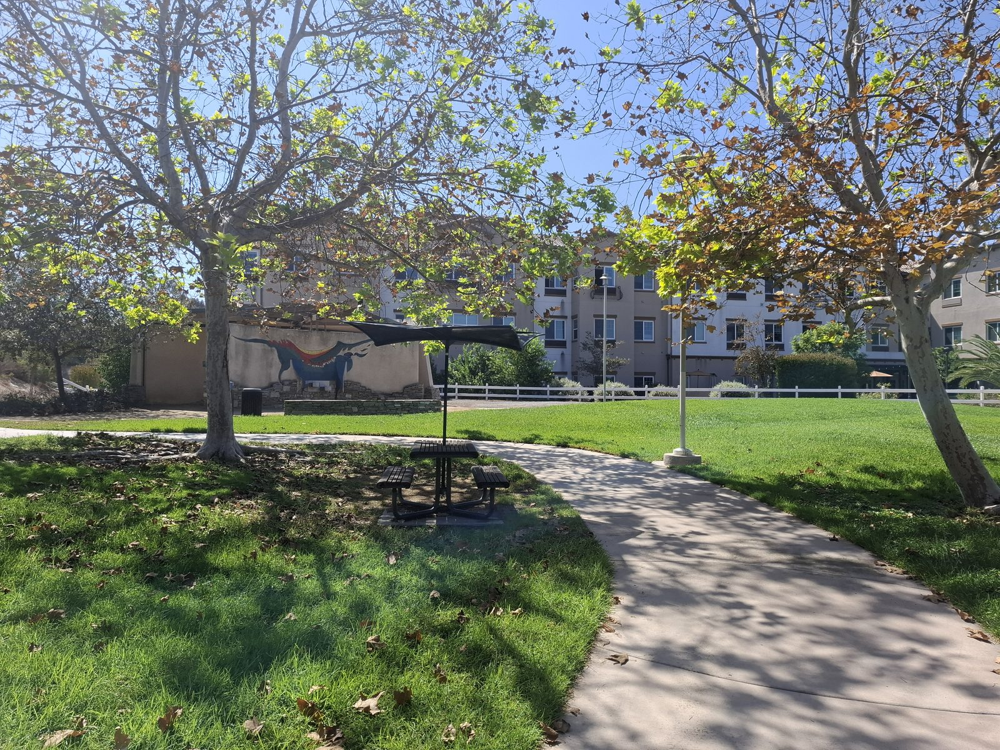
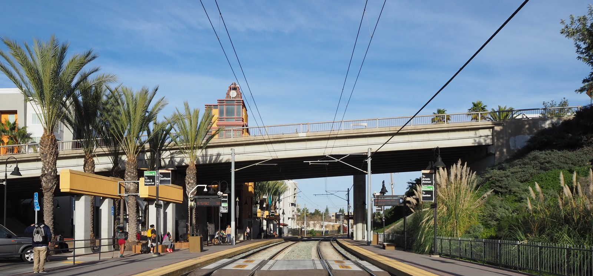
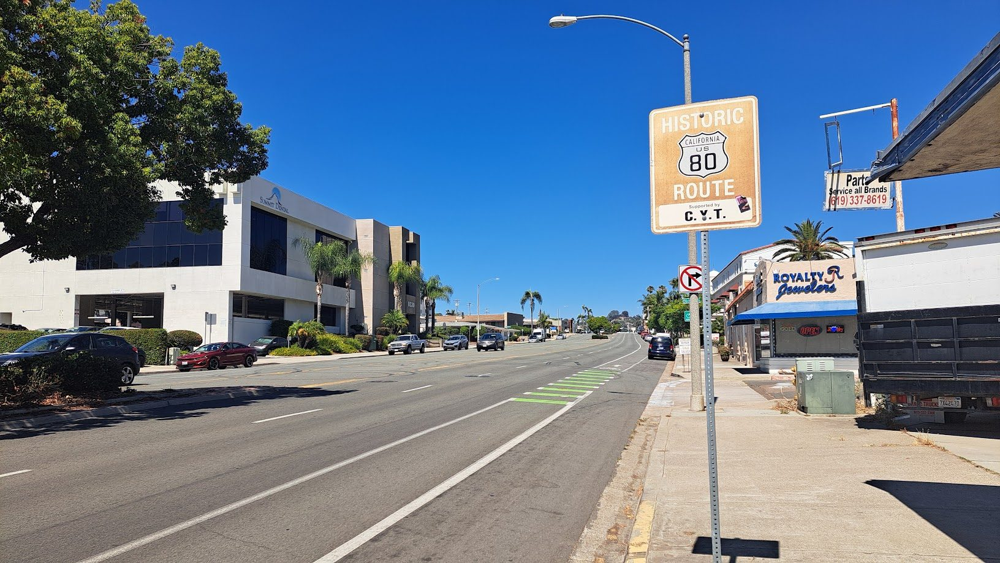
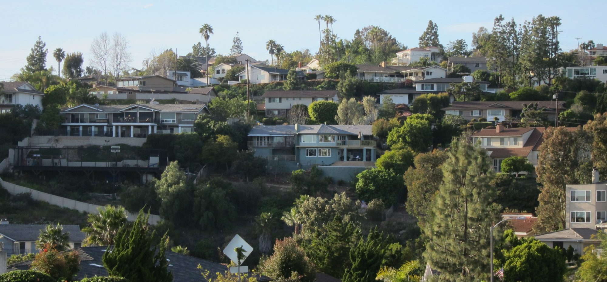
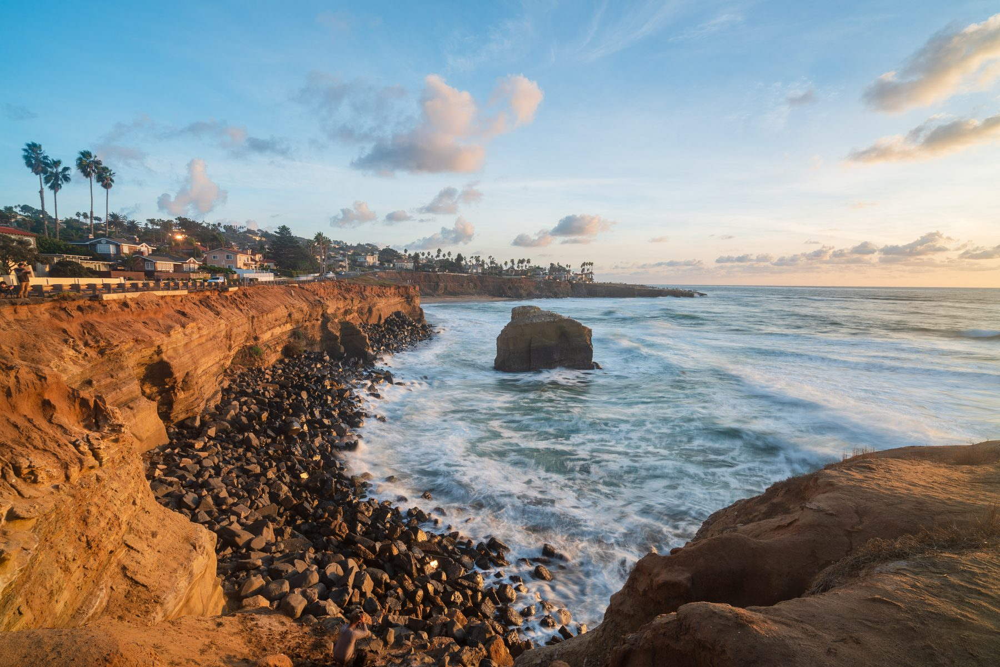
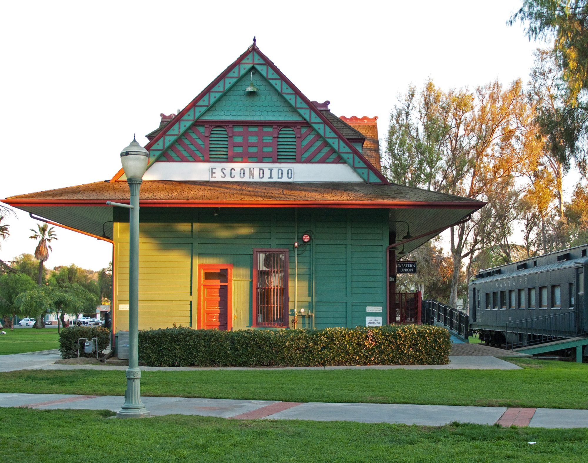

01

La Mesa, San Diego County
Homes in the hill city east of San Diego, with saved searches and the things Jim checks before you write an offer.
La Mesa at a glance
La Mesa is its own city, 9.2 square miles on both sides of Interstate 8, just east of the City of San Diego. It incorporated in 1912 with about 700 residents, and it calls itself the Jewel of the Hills.
Most of the city sits between 500 and 700 feet above sea level, with Mount Nebo inside its limits and Mount Helix rising to the east. Interstate 8 runs east to west through it and State Route 125 north to south, and the trolley stops at five stations within the city.
Saved searches
Each card opens a live search of MLS listings, updated as they change.

01

02

03

04
<!-- IDX_ZONE: homes-for-sale-la-mesa-ca-feed -->
The newest La Mesa listings in one compact row, six to eight homes. Builder places the Showcase hotsheet shortcode here in its compact layout.
La Mesa started as a way station for travelers and freight heading east, and its Village was a cluster of houses and businesses where Lookout Avenue met Chollas Road. The wagon road along Chollas Creek is University Avenue now, and Lookout Avenue became La Mesa Boulevard.
La Mesa Springs voted 249 to 60 to become the City of La Mesa in February 1912. The trolley arrived in 1989, the first rail passenger service since 1928, and MTS now runs the Orange and Green lines through the city's five stations, La Mesa Boulevard and Spring Street among them.
Collier Park on Palm Avenue holds the original La Mesa Springs, a seasonal stop for the Kumeyaay and, by the 1860s, water for Robert Allison's sheep. D.C. Collier bought the springs in 1905, opened a bottling works there by 1907 and gave part of the land for public use in 1910. The City had made it a municipal park by 1920.
The City has designated 46 historic landmarks, most of them houses, six on Date Avenue and five on Lemon Avenue. The rest include the La Mesa Depot on Nebo Drive, built in 1894 for the farmers who shipped citrus and avocados from it, and the 1939 Art Moderne post office on La Mesa Boulevard.
The City keeps public stairways in the Mount Nebo and Windsor Hills area. From Windsor Drive at Canterbury Drive, 245 steps climb to Summit Drive, one of La Mesa's highest knolls at 830 feet, and another 184 run down the far side to Beverly Drive. The City asks walkers to respect the homes along them.
South of University Avenue, the City's plan describes houses on large hillside lots that run east into unincorporated county land. Mount Helix, beyond, is county land under the Valle de Oro Community Plan, with custom homes on lots of half an acre or more on its slopes.
Interstate 8 cut La Mesa in two when it was built, and the Baltimore Drive bridge joined the halves again in the 1970s. The neighborhoods north of the freeway went up in the 1950s and 1960s on wider, curving streets, some of them ending in cul-de-sacs.
Along the city's northern edge is Lake Murray, a City of San Diego reservoir whose dam went up in 1918. Full, it covers 171 acres with 3.2 miles of shoreline, and the reservoir is open for fishing and boating.

Day to day
School information is factual and by district. Always confirm a specific address in the district's school finder.
Questions
No. Mount Helix is unincorporated San Diego County, east of the city, under the County's Valle de Oro Community Plan. County zoning and permits apply there, so confirm a parcel's jurisdiction.
La Mesa-Spring Valley Schools for the elementary and middle grades, and Grossmont Union High School District, which serves most of La Mesa, for high school. Both have address locators, so confirm a specific address there.
Yes. The trolley returned in 1989, and MTS runs the Orange and Green lines through five stations in the city: 70th Street, Grossmont, Amaya Drive, La Mesa Boulevard and Spring Street.
La Mesa Springs voted to incorporate on February 7, 1912, by 249 votes to 60, and the state recognized the City of La Mesa on February 16, 1912.
Nearby




Resources
Contact
Tell him which streets you are looking at, inside the city or on the county side, and he will tell you what he knows about them before you go and see them.